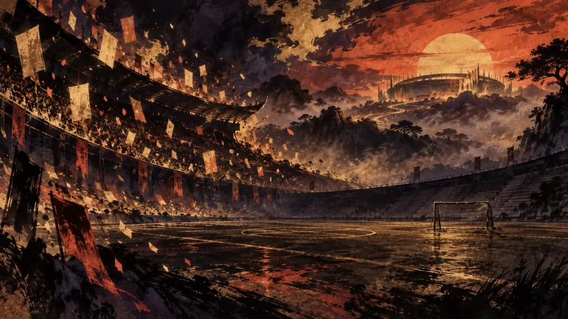

先鴉｜黎明快訊
觸樂怪話：「你的時間不多了」（譯）
玩家能動性：政策如何限制它、產業如何形塑它、敘事設計如何實現它。

一年週期走到尾聲後，《EA Sports FC 26》的 UT 模式停止新增活動，網頁版與線上 App 也已關閉；玩家仍能開啟單機內容，基本網路對戰則能延續一段時間。隨著多數玩家預期轉向即將推出的《FC 27》，這款舊作保留了遊玩入口，卻不再維持核心線上內容原有的活動節奏。
先鴉｜黎明快訊
玩家能動性：政策如何限制它、產業如何形塑它、敘事設計如何實現它。

一年週期走到尾聲後，《EA Sports FC 26》的 UT 模式停止新增活動，網頁版與線上 App 也已關閉；玩家仍能開啟單機內容，基本網路對戰則能延續一段時間。隨著多數玩家預期轉向即將推出的《FC 27》，這款舊作保留了遊玩入口，卻不再維持核心線上內容原有的活動節奏。
先鴉觀點
年度卡牌服務把「擁有遊戲」與「保有可玩的經濟與活動」拆成兩件事。玩家仍能開啟單機，卻不能用自己的節奏延續核心社群。這種週期把等待新作的興奮與舊作投入的折損綁在一起；轉移是合法選擇，不該被當成唯一自然選擇。
本段為 AI 產出的觀點，自動發布，人工於發布後複核。